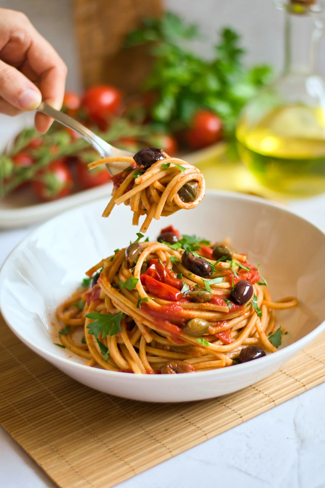
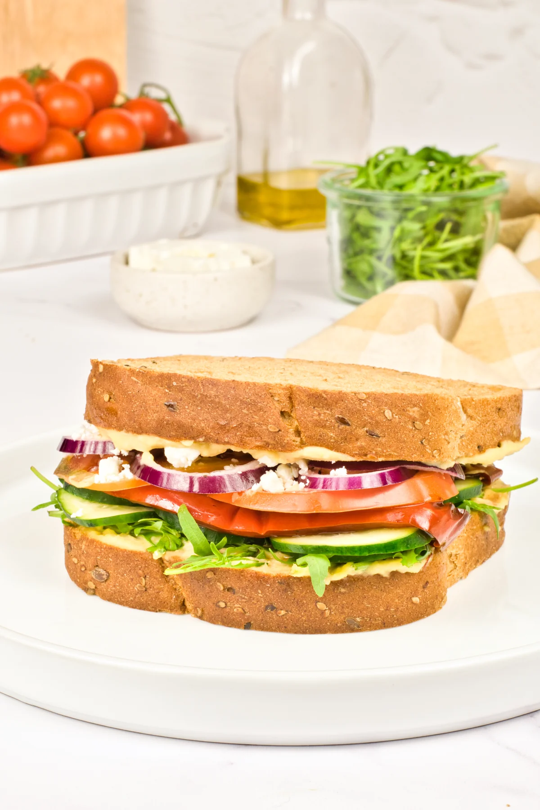
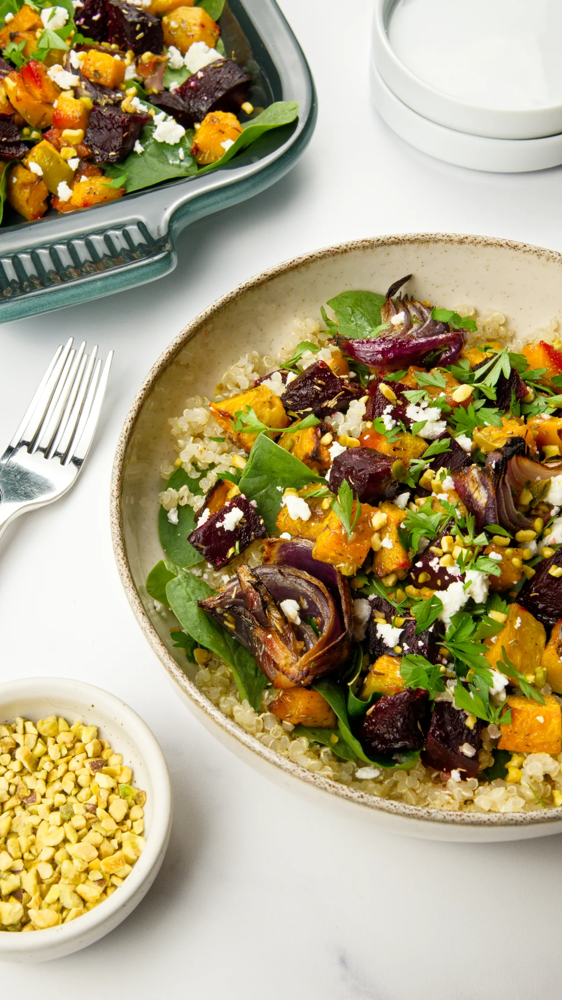
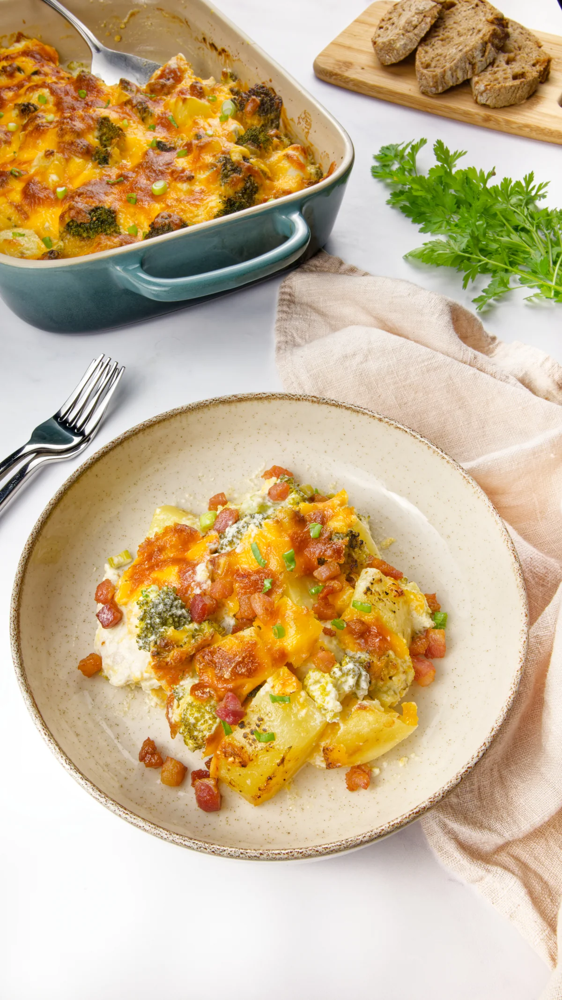
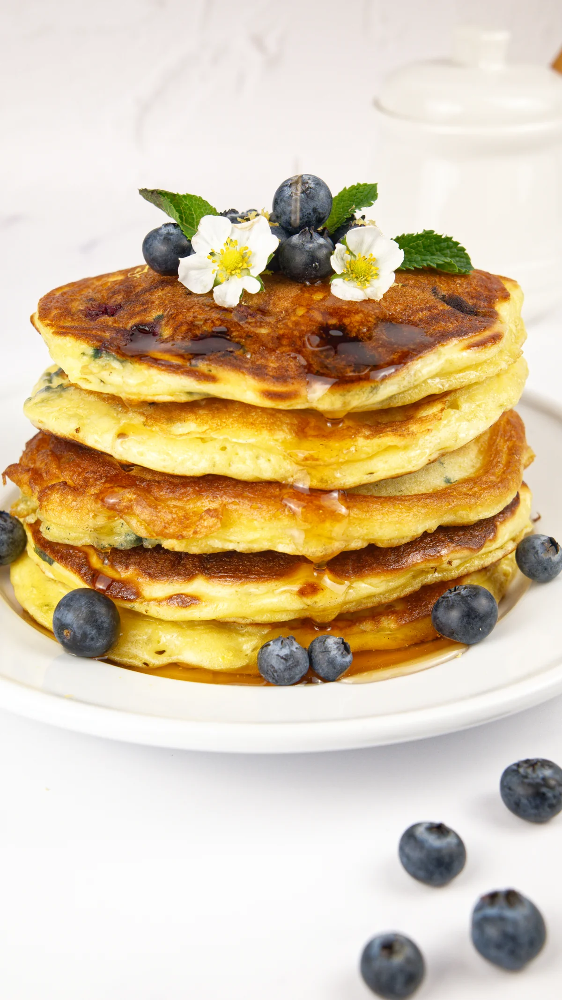

Full Service Studio
Great recipes deserve great images. And great images deserve a strategy behind them.
Food blogging is a lot — the cooking, the styling, the shooting, the editing. We handle all of it for you!
Choose the package that fits your blog, or let's build one together around your needs and your budget.

Service 01
You tell us the recipe and we bring it to life around your brand and vision. Before anything is cooked or shot, we align on every detail — lighting, styling, backgrounds, and props — so every image feels intentional and completely yours.
This is the right choice when you already know what you want to make but need a team that can execute it at the level your audience expects.
What's included:
Best for: Bloggers and content creators who have a recipe ready and want it photographed to a professional standard.
Get In Touch
Service 02
No recipe yet, but a direction? We take your idea, decide on the right recipe for your niche, develop and test it in our kitchen, then photograph it with the same attention to your brand and style.
You get a fully original recipe that nobody else has, paired with a complete gallery ready to publish and rank.
What's included:
Best for: Bloggers who need original, ready-to-publish content without spending hours in the kitchen.
Get In Touch
Service 03
That post still gets traffic, but the photos aren't doing it justice — or you know a recipe could rank so much higher with better images. The content is already there. It just needs to look the part.
We recreate the dish and reshoot it with current styling, aligned to how your brand looks today. Same recipe, completely new visual life.
What's included:
Best for: Bloggers who would like to give a new look to old recipes for a refresh.
Get In Touch
Service 04
Video is today one of the strongest formats for food content — from Instagram to Pinterest to your blog, people engage more when they can see the recipe come to life.
We shoot the full process, from ingredient prep to the final plate, capturing every step in a way that keeps people watching. Before we start, we align on style, pace, and tone — so the video feels like a natural part of your content, not something shot separately.
What's included:
Best for: Bloggers and creators ready to grow and looking to build a stronger presence on social media.
Get In Touch
Service 05
Every blog is different. Maybe you need a reshoot and a video together. Maybe you have a tight budget but a clear vision. Maybe you're not sure where to start.
If none of our services fit exactly what you need, we'll put something together that does — mixing formats, adjusting deliverables, and working around what makes sense for your blog and your budget.
What's included:
Best for: Bloggers who need something specific, or want to combine services in a way that makes sense for their content strategy.
Get In TouchThe Process
Tell us about your blog, your niche, and what you need. We'll figure out which service fits best.
We send a clear proposal with scope and timeline. No surprises — you know exactly what you're getting.
We handle the kitchen, the camera, and the strategy. You focus on your blog while we do the work.
You receive your file the way you prefer — Google Drive, WeTransfer, or ready to download — and publish straight away. Recipes and usage rights included.
Let's Work Together
Tell us about your blog, your content, and what you're trying to achieve. We'll figure out the rest — together.